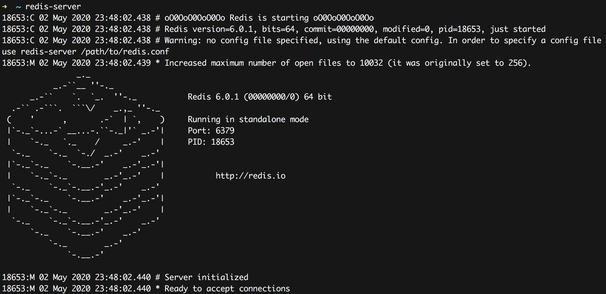
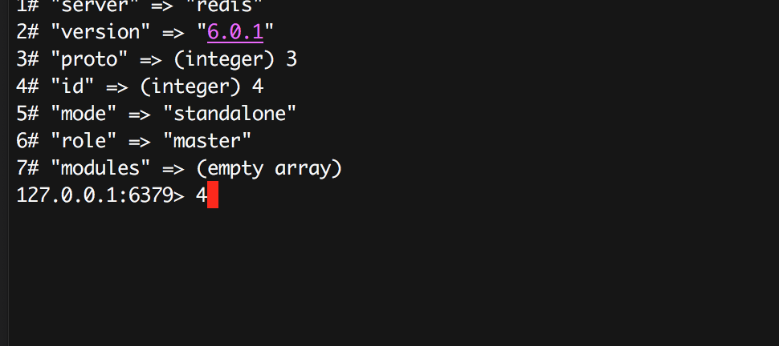

Redis 6.0 发布了。
Redis 6.0的新特性也是在一步步的讨论和优化中确定的。
很多的特性已经在之前的RC等版本中介绍过了。
但是正式GA版中也有一些新的变化:
- SSL
- ACL: 更好，命令支持
- RESP3
- Client side caching:重新设计
- Threaded I/O
- Diskless replication on replicas
- Cluster support in Redis-benchmark and improved redis-cli cluster support
- Disque in beta as a module of Redis: 开始侵入消息队列领域
- Redis Cluster Proxy
- 支持RDB不再使用时可立即删除，针对不落盘的场景
- PSYNC2: 优化的复制协议
- 超时设置支持更友好
- 更快的RDB加载，20% ~ 30%的提升
- STRALGO，新的字符串命令，目前只有一个实现LCS (longest common subsequence)
@antirez 提到只是Redis历史上最大的一次版本更新，所以谨慎建议在应用的产品中还是多多测试评估，并且承诺一旦遇到大的bug就会紧急发布6.0.1版。果不其然，一天后就发布了 6.0.1版，修复了一个allocator的bug，这个bug是为了优化而引入的，现在暂时去掉了。
I just released Redis 6.0.1. Unfortunately there was a bug in Redis 6.0.0 introduced just a few days before the release, that only happens when using the non-default allocator (libc malloc in this case triggers it). Optimization reverted, 6.0.1 released. Sorry for the issue.
本文主要关注Client side caching(客户端缓存)这一特性。
smallnest/RESP3 是Redis RESP3协议的解析库，你可以使用它和Redis底层通讯，或者包装它实现新版的Redis client库或者Redis Server端。
一年前，当 @antirez 参加完纽约Redis大会后，5:30就在旅店中醒来了，面对曼哈顿街头的美丽景色，在芸芸众生中思索Redis的未来。包括客户端缓存。
其实，客户端缓存特性是收到Redis Conf 2018的Ben Malec的影响，一下子打开了 @antirez 思路。 我们知道， 很多公司使用Redis做缓存系统，并且很好的提高了数据访问的性能，但是很多企业为了进一步应对热点数据，还是会在redis的client端缓存一部分热点数据，用来应对吃瓜事件。比如在微博我们经常遇到的是明星出轨、明星分分合合、突发事件等等，每年都会有几次突发的事件，微博除了使用Redis做缓存避免直接访问数据库，还会在前面加更多的cache层，比如L1 cache等，采用memcached等产品作为热数据的缓存。那么就有一个问题，如何能够及时的同步这些cache和redis的数据呢？Ben提供了非常有意思的想法。
伫立在曼哈顿的街头,@antirez 陷入了沉思，后来回到旅馆他开始实现初版的客户端的缓存。当然，最终Redis 6.0中实现和这个初版的实现差别很大，但是很是显然，从客户端的演化过程中我们还是能看到@antirez对这个特性所在的权衡(trade off)。关于这个历史本文不做太多的介绍，因为我们更关注于这个特性最终是什么样子的。
Redis实现的是一个服务端协助的客户端缓存，叫做tracking。客户端缓存的命令是:
|
|
当tracking开启时， Redis会"记住"每个客户端请求的key，当key的值发现变化时会发送失效信息给客户端(invalidation message)。失效信息可以通过RESP3协议发送给请求的客户端，或者转发给一个不同的连接(支持RESP2+ Pub/Sub)。
当广播模式(broadcasting)开启时，参与tracking的客户端会收到它通过前缀订阅的key的相关的通知，即使它没请求过对应的key。同时还提供了OPTIN、OPTOUT等模式。
失效消息：当一个key的数据有修改的时候，需要告诉客户端它以前缓存的数据失效了，这时redis会主动发送一条失效消息
- REDIRECT
: 将失效消息转发给另外一个客户端。当我们不使用RESP3而是使用老的RESP2和Redis通讯时，client本身不支持处理失效消息，所以可以开启一个支持Pub/Sub客户端处理失效消息。当然如果客户端支持RESP3也可以将失效消息转发给另外一个客户端。这个cace我们放在最后演示。 - BCAST: 使用广播模式开始
tracking。在这种模式下客户端需要设置将track的key的前缀，这些key的失效消息会广播给所有参与的客户端，不管这些客户端是否请求/缓存额这些key。不开始广播模式时，Redis只会track那些只读命令请求的key，并且只会报告一次失效消息。 - PREFIX
: 只应用了广播模式，注册一个key的前缀。所有以这个前缀开始的key有修改时，都会发送失效消息。可以注册多个前缀。如果不设置前缀，那么广播模式会track每一个key。 - OPTIN: 当广播模式没有激活时，正常不会track只读命令的key，除非它们在
CLIENT CACHING yes之后被调用。 - OPTOUT: 当广播模式没有激活时，正常会track只读命令的key，除非它们在
CLIENT CACHING off之后被调用。 - NOLOOP: 不发送client自己修改的key。
下面让我们一一介绍每个选项。
测试环境搭建
首先让我们介绍RESP3协议相关的选项，REDIRECT <id>放在最后介绍。
在尝试之前，你首先需要安装一个redis 6.x的版本，目前时6.0.1。在官方网站上有源代码的下载，编译安装也很简单：
|
|
相信很快就有编译好的二进制包可以下载。
启动server, 它会在6379端口启动一个服务:
|
|
使用redis-cli访问,默认访问本机的6379实例:
|
|
当然你可以通过-h查看额外的参数配置，比如使用其它端口等等，这里我们使用最简单的例子，重点是了解客户端缓存的特性。
有时候为了更好的观察redis的返回结果，我们使用telnet而不是redis-cli作为client连接redis，因为redis-cli对结果做了处理，尤其是失效消息，你可能无法观测到。
BCAST 广播模式 (client tracking on)
启动redis server:

启动redis-cli:

当然，我们使用telnet来测试，方便观察redis的返回结果，刚才redis-cli用来更新key值，辅助测试。
连接上之后发送hello 3开启RESP3协议：
|
|
之后尝试开启tracking并读取a的值:
|
|
这个时候如果使用redis-cli作为另外一个client更新a的值，telnet这个client应该能获得通知:
|
|
观察telnet，它收到了一个失效消息：
|
|
注意它采用RESP3中的PUSH类型(>)。
如果这个使用你再使用redis-cli更新a的值，telnet不会再收到失效消息。 除非telnet client再get a一次，重新tracking a的值。
可以随时取消tracking:
|
|
tracking特定前缀的key (client tracking on)
上面的方式会tracking所有的key，如果你只想跟踪特定的key, 目前redis提供了一种方式，也就是前缀匹配的方式。你可以只tracking特定前缀的key。
它值应用了广播模式。
使用telnet client设定前缀和开启tracking：
|
|
我们tracking两个前缀，以a开头的所有的key和以user开头的所有的key,所有a开头的所有的key和以user开头的所有的key(包括a和user)的key变动时它应该都收到消息。
然后我们使用redis-cli更新三个key: abc、user:32432723213和feed:6532343243432:
|
|
telnet client收到abc和user:32432723213的失效消息,而不会收到feed:6532343243432的失效消息：
|
|
你可以通过client tracking off停止客户端缓存。目前貌似不能只停止对单个的前缀的tracking。 即使你使用client tracking off prefix user也是取消对所有的key的tracking。
|
|
选择加入
如果使用OPTIN,可以有选择的开启tracking。 只有你发送client caching yes之后的下一条的只读命令的key才会tracking, 否则其它的只读命令中的key不会tracking。
首先我们开始optin，读取a的指，这个时候使用redis-cli client修改a的值为1000，我们并没有收到a的失效消息。
|
|
接下来我们发送client caching yes，紧接着获取a的值，这个时候如果再修改a的值，你就可以收到一条a的失效消息:
|
|
必须是紧跟着client caching yes吗?是的，比如发送下面的命令，只会tracking b,而不是a:
|
|
选择退出
如果使用OPTOUT,你也可以有选择的退出tracking。 只有你发送client caching off之后的下一条的只读命令的key才会停止tracking, 否则其它的只读命令中的key都会被tracking。
可以看到它和OPTIN正好相反，你可以根据你的场景来选择。
比如下面的例子，开启OPTOUT之后，对任意的key的变动都收到失效消息：
|
|
这个时候如果我们想排除b这个key，可以只针对它进行设置:
|
|
之后对b的变动并不会收到b的失效消息。
注意: OPTIN和OPTOUT是针对的非BCAST场景，也就是只有你发送了key的只读命令后，才会跟踪相应的key。而广播模式是无论你是否发送过key的只读命令，只要redis修改了key，都会发送相应key(或者匹配前缀的key)的失效消息。
NOLOOP
正常设置时，失效消息是发给所有参与的client，但是如果设置了NOLOOP,则不会发送给更新这个key的client。
|
|
注意，取消tracking只需调用client tracking off即可。
REDIRECT
最后，让我们看一下转发消息的处理。这是为了兼容RESP2协议一个处理方式，将失效消息转发给另外一个client。
首先我们查看redis-cli的client id:
|
|
使用telnet连接redis,查看client id:
|
|
telnet 客户端开启订阅失效消息：
|
|
然后我们就可以将redis-cli的失效消息转发给telnet client:
|
|
可以看到telnet客户端收到了失效消息：
|
|
如果你要转发的目的client开启了RESP3协议，你就不需要RESP3 Pub/Sub了，因为RESP3原生支持Push消息。
redis的tracking feature的实现代码在:tracking.c。